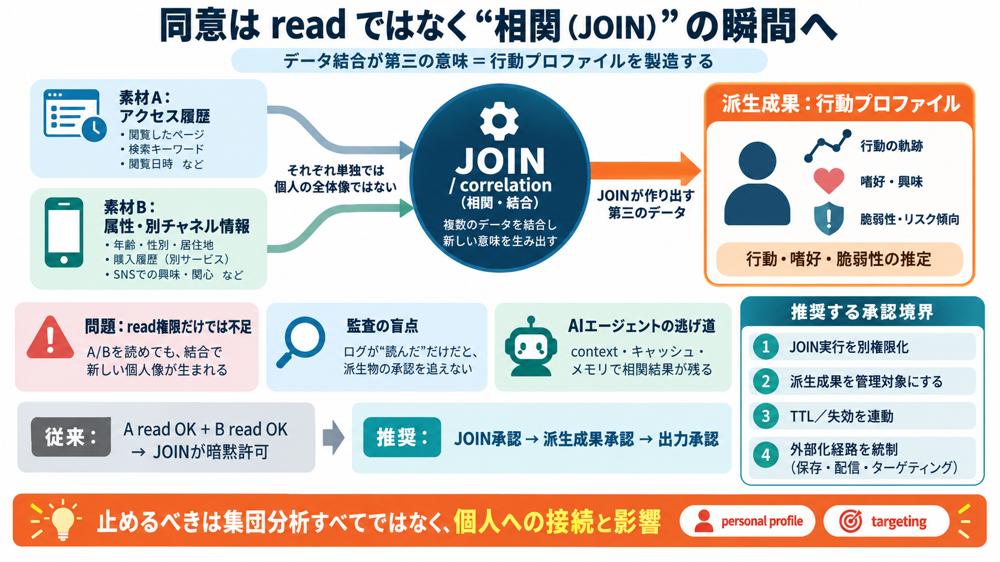

7 Big Data Analytics Privacy Problems & Solutions (2026)
• Privacy-utility tradeoffs are quantifiable: Differential privacy preserves 87% of correlation accuracy but eliminates …

監視的推論の入口
「読む（read）」を分けても、「結合（correlation / JOIN）」と「派生成果（保存・利用されるプロファイル）」に別の承認境界がないと、同意のない推論が生まれ得ます。
権限の罠
データAとBをそれぞれ「読む」権限が別でも、JOINは両者から第三の意味（第三の決定）を生成します（manufacture）。
AやB単体には、本人の行動像や脆弱性が“生成”されないことが多い。
JOINすると、新しい個人像（派生成果：行動プロファイル）が“後から”作れる。
合成＝新製造
AとBは素材に過ぎません。相関・結合はレシピであり、本人の同意がないまま“料理（プロファイル）”を作ってしまうのが核心です。
アクセス履歴など（input/素材）
属性・別チャネル情報など（input/素材）
行動・嗜好・脆弱性の推定（profile / 推論）
※ 英: manufacture / Japanese: 製造（生成）
境界の再配置
権限境界を「テーブルAを読める／Bを読める」だけで終わらせず、JOINそのもの（correlation）と、生成された派生成果の保持・利用に置きます。
JOIN（相関）の実行権限 / correlation authorization
派生成果（プロファイル）の保存・出力範囲 / purpose & scope
監査の盲点
監査ログが「読んだ事実」しか追えないと、結合で生まれた“派生物”の承認が欠けていても検出しづらくなります。
read（データ参照）という“レシート”
未分類・未所有・未レビューの派生成果（profile / derived view）
結果: 責任の連鎖が切れ、「許可されたのはreadだけ」で済まされる。
止める場所
エージェント（AI）が会話やツール実行の文脈で相関・結合し、その結果を保持・推論に使うと、DB層の監視だけでは境界を守れません。
context window / 文脈内で合成（相関が先に起きる）
再計算・再利用で“結合が記録されない”形になる
agent memory / ノート・メモで派生成果が残る
承認の三点セット
JOIN権限だけでなく、派生成果を“所有物”として扱い、TTLと外部化経路まで承認対象に入れると、同意境界が連鎖します。
派生成果を管理対象（物）にする：誰のものか
期限・失効を設計：相関権限が外れても残存を抑制
保存/配信/ターゲティングなど出力形態ごとに承認
従来 vs 推奨
「readの分離」中心の設計では、相関で生まれた新しい能力（プロファイル生成）を止められません。推奨は“JOINと派生成果”です。
A read OK / B read OK → JOIN実行も“暗黙に”許されやすい
JOIN（correlation）に別承認 → 生成物（派生成果）に別承認
英: correlation authorization / Japanese: 相関（結合）承認
どこまで承認する？
目的（purpose）を含めるだけでは不十分になり得ます。目的が“固定・検証可能・改ざん耐性”を持ち、派生成果の形と結びついている必要があります。
固定性 / 検証可能性 / 出力（派生成属性）との結合
保存・配信・ターゲティング等の“外部化経路”ごとに統制
※ 自己申告のpurposeだけだと骨抜きにされる懸念。
全部禁止？
集団分析まで一律に止めるのではなく、個人に結び付く推論や個人への影響（ターゲティング等）に至る部分を承認に紐づけます。
個人プロファイル（personal）への接続を作る相関
個人への影響を伴う外部化（ターゲティング / 配信）
英: targeting / Japanese: ターゲティング
結論
JOINを“第三の決定（meaning generation）”として扱い、派生成果を所有・TTL連動・外部化統制する。これで監査がレシートから承認連鎖へ近づきます。
JOIN（correlation）を別権限化
派生成果を管理対象にする（保存・利用）
TTL/失効と外部化経路を統制
参考（方向性）
このデッキは、提示文で述べられた「JOINが生成する第三の成果に境界を置く」という思想に沿って、一般化した設計観点を整理しています。
データ結合（JOIN/correlation）とプライバシー: 相関から個人レベルの洞察が生まれる点への注意（差分プライバシー/匿名化などの文脈で議論されることが多い）。
同意管理と監査: 同意要件を統合し、データ交換の全経路で統一的な監査を作る重要性。
エージェント設計: context / キャッシュ / メモリによって、DB層の監査だけでは承認境界を突破し得ることへの注意。
• Privacy-utility tradeoffs are quantifiable: Differential privacy preserves 87% of correlation accuracy but eliminates …
Articles # Data Privacy Governance: 8 Best Practices (2026) Implement data privacy governance with 8 best practices —…
### 4. Build privacy into design Privacy by design means incorporating privacy controls from the beginning of any proje…
Privacy and security of AI agents are major concerns due to their autonomous decision-making, extensive data handling, a…
Kiteworks addresses this enforcement reality through a unified Private Data Network that consolidates governance across …